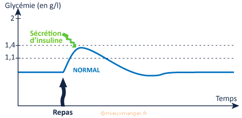
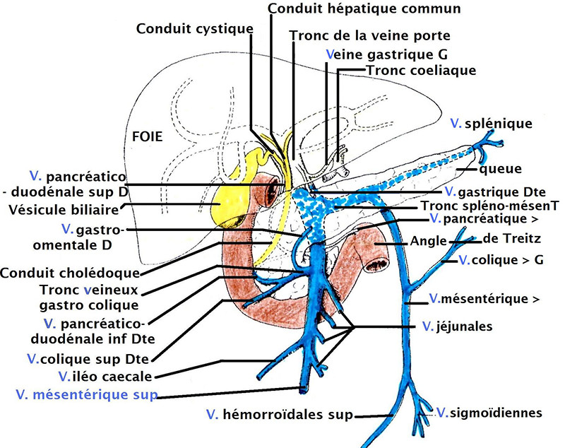
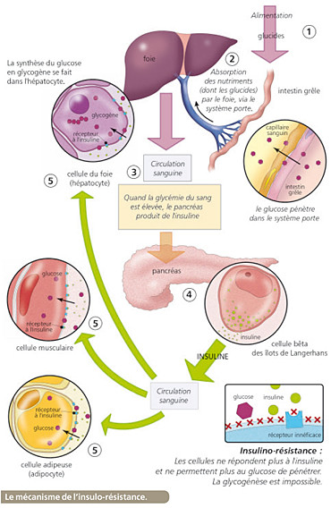
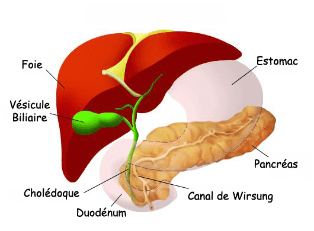
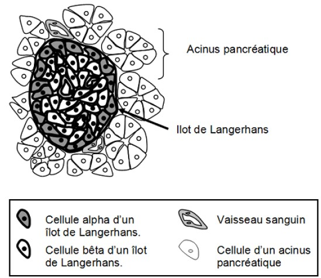
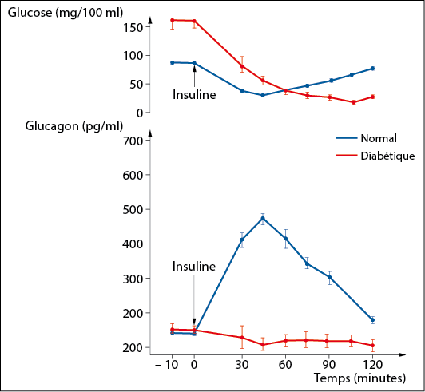
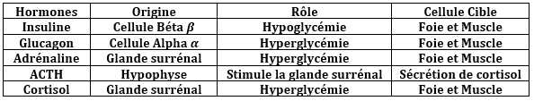
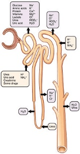
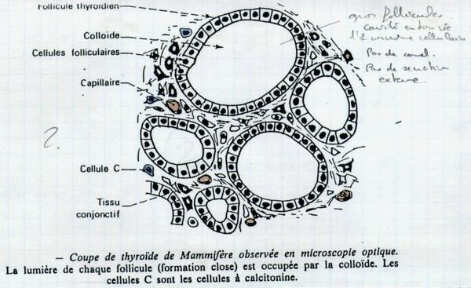
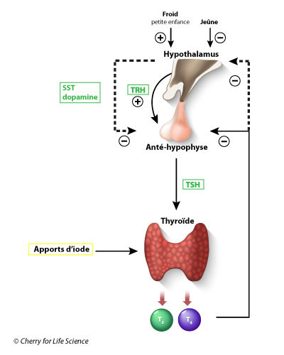

Glycémie, Thyroide et Para-thyroide (Calcémie)
I – Glycémie
La glycémie est le taux de glucose dans le sang.
La valeur normale de glycémie est de 1 g/l cette quantité se varie selon les cas de diabète, utilisation de glucose.
Quand le taux de glucose s’écarte de 20% de plus ou moins on dit qu’il y a un Hyperglycémie ou Hypoglycémie.
Si la glycémie est de 1.8 g/l on remarque l’apparition de la glycosurie « taux de glucose dans l’urine ».
Expérience : on donne à un individu une Qtt de glucose et on mesure la glycémie, on distingue une augmentation de glycémie pendant les premières heures et après la glycémie devient normale donc le sujet a un mécanisme de la régulation de glycémie.

Parmi les organes qui intervienne dans la régulation de la glycémie :
1 – Le Foie : l’ablation de foie est dite Hypotoctomie provoque la diminution de glycémie et la mort donc le foie stock les glucoses sous forme glycogène
nC6H12O6 -----> (C6H10O5)n + nH2O


2 – Le Muscle : Utilise le glucose comme source d’énergie ou le stock sous forme de glycogène musculaire.
3 – Pancréas : humaine est un organe situé au-dessus de l’estomac il renferme :
- Les Acinus Pancréatique : sont des élément arrondis qui représente une glande exocrine sécrétrice des enzymes digestifs.
- Îlots de Langerhans : sont des glandes endocrine secretrice des hormones dans le sang et former par deux cellules β et α.
L’ablation totale du pancréas est dite pancréatectomie provoque autre que les troubles digestifs grave qui déclare le diabète : Hyperglycémie, glycosurie, la soif, amaigrissement et polyurie il existe deux types de diabète :
+ Diabète Juvénile (DID) : Marquer par l’insuffisance de l’insuline.
+ Diabète Obèse (DNID) : Marquer par l’absence du récepteur de l’insuline.
Greffe de pancréas sous la peau ou l’injection d’extrait pancréatique provoque la disparition du symptôme de diabète donc le pancréas agit par l’intermédiaire des hormones :
- Insuline : secrété par la cellule β et provoque l’hypoglycémie par l’influence sur les cellules de stockage et cellules de l’usage de glucose.
- Glucagon : secrété par la cellule α et provoque Hyperglycémie.


+ Comparaison de deux types Normale et Diabétique :
Juste après l’utilisation de glucose :
- Une augmentation de glycémie chez les deux sujets mais chez le normal il y a eu une reprise de glycémie normale.
- Une augmentation de glycosurie seul chez le sujet diabétique car il manque un mécanisme de régulation de glycémie.

• Stimulation du centre nerveux provoque Hyperglycémie.

+ Néphron :
elle tienne à l’utilisation de rôle de rein et artère et le tube urinaire, le rôle de Rein est :
- Filtrage
- Réabsorption

II – Thyroïde
La thyroïde est une glande endocrine présente chez tous les vertèbres, elle se situe au niveau de l’œsophage et comprend des follicules de tailles différentes et de liquide « Colloïde ».

+ Quelques cas pathologiques Humaines :
1 – Myxœdème : due à l’influence du rôle de la thyroïde et caractérisé par des symptômes :
- Baisse de métabolisme.
- Hyperthermie corporelle.
- Ralentissement très marquer de la croissance.
- Arrêt de développement intellectuelle.
2 – Goitre : due à l’influence du rôle de la thyroïde et marqué par les mêmes symptômes de Myxœdème.
3 – Maladie de Basedow : c’est une maladie due à l’excès du rôle de la thyroïde et de son hypersécrétion est marqué par une hypertrophie de la thyroïde.
+ Etude expérimentale :
- L’ablation de la thyroïde provoque le myxœdème et arrêt de croissance.
- Greffe de la thyroïde ou l’injection d’extrait thyroïdienne corrige les troubles, donc la thyroïde agit par l’hormone Thyroxine « T3 et T4 » thyreoglobine.
+ Régulation de la fonction thyroïdienne :
Ablation de l’hypophyse provoque l’atrophie de la thyroïde et la greffe de l’hypophyse ou l’injection d’extrait hypophysaire corrige les troubles, donc l’hypophyse agit sur la thyroïde par l’intermédiaire de l’hormone TSH.
L’ablation de la thyroïde provoque l’hypertrophie de l’hypophyse et sécrétion massive de TSH, donc la thyroïde contrôle la sécrétion de TSH par une réaction appelé Feed-back.

+ Les rôles des hormones thyroïdienne :
- L’augmentation des opérations métabolique.
- Equilibrage thermique.
- Responsable de la croissance.
- Représente la réserve de l’élément d’iode.
III – Para-thyroïde (Calcémie)
Sont quatre glande voisine de la thyroïde responsable de la régulation de taux de Ca2+ dans le sang « Calcémie ».
- Hypocalcémie : provoque la sécrétion de Para-thormone, parathyroïdienne responsable de l’hypercalcémie.
- Hypercalcémie : provoque la sécrétion de calcitonine thyroïdienne responsable de l’hypocalcémie.
- Hypersécrétion de Para-thormone : provoque une fragilité des os et l’hypercalcémie et des tétanos musculaires et la conduction du message nerveux synaptique.